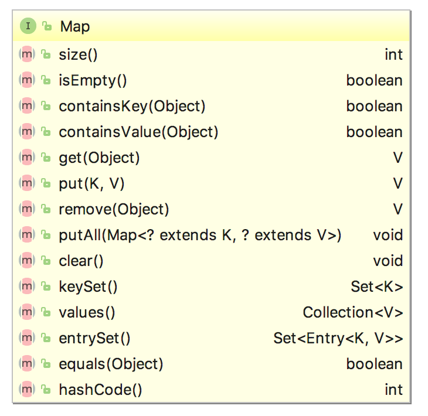

1 基础介绍
Map是编程中常用数据结构，它存储一组键值对象，提供key（键）到value（值）的映射。Java通过继承接口java.util.Map对Map数据类型进行规范化定义，如下图 
我们可以很清楚的看到，Map定义了三套collection View，分布是keySet()、values()、entrySet(),他们依次代表着key的列表、value的列表、已经key-value的映射关系列表。其中entrySet()更是定义了Map的核心结构是Entry
2 核心类图
java.util.Map只是进行了规范化定义，并没有具体实现。Java中有HashMap，HashTable等实现了该规范，其核心类图如下

3 1.8新特性
直接看1.8版本中Map的类图
可以发现1.8版本的jdk相对1.7中增加了很多方法比如：putIfAbsent等。
default V putIfAbsent(K key, V value) {
V v = get(key);
if (v == null) {
v = put(key, value);
}
return v;
}
可以发现一个很有意思的定义方式 default。这个关键字彻底解开“实现接口必需实现其所有方法”的魔咒，另外还有一个关键字static，也可实现这个功能。
这里不过多的赘述每个方法的使用和实现细节了。